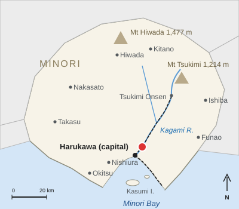
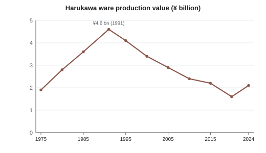

Harukawa ware
| Harukawa ware 春川焼 | |
|---|---|
 Tea bowl with kasumi glaze and an iron-brown rim | |
 Suyama, the main production district | |
| Overview | |
| Type | Stoneware |
| Region | Suyama district, Harukawa, Minori Prefecture |
| Since | 1624 (domain kiln) |
| Founder | Ōtani Sōemon |
| Clay | Suyama clay (4–6 % iron oxide) |
| Main glaze | Kasumi glaze (霞釉) |
| Decoration | Kawasuji brushwork, yuzu-hada texture |
| Firing | Reduction, 1,250–1,280 °C |
| Designation | Traditional Craft (1979) |
| Industry (2024) | |
| Kilns | 38 (71 in 1991) |
| Workers | about 210 |
| Production value | ¥2.1 billion (peak ¥4.6 billion, 1991) |
| Trade body | Suyama Kiln Association |

Harukawa ware (春川焼, Harukawa-yaki) is a type of Japanese stoneware made in Harukawa, the capital of Minori Prefecture, mainly in the pottery district of Suyama (陶山), about 13.5 km north-east of Harukawa Central by rail and reached from Kamano Station. It is best known for the kasumi ("mist") glaze, a milky pale blue-gray glaze often broken by a fine orange-peel texture called yuzu-hada, for an iron-brown rim where the glaze thins over the iron-rich Suyama clay, and for kawasuji ("river line") brushwork in iron oxide. The ware traces its origin to 1624, when Asagiri Tadamasa, the first lord of the Harukawa Domain, invited the potter Ōtani Sōemon from Hizen to build a domain kiln in the grounds of Harukawa Castle.[1]
Commercial kilns in Suyama village produced everyday ware from the 1680s, and the industry survived the loss of domain patronage in 1871 through an export trade to Europe and North America. After a long decline it was revived from 1919 by the potter Kawabe Shūzan and, after the Second World War, by his student Hanae Ishizuka, who recreated the lost domain kasumi glaze in 1964 and was designated a Living National Treasure in 1985. The national government designated Harukawa ware a Traditional Craft in 1979. In 2024 the district had 38 kilns with about 210 workers and a production value of ¥2.1 billion, less than half the peak of ¥4.6 billion from 71 kilns in 1991.[2] The Kamano Pottery Fair, held in front of Kamano Station on the first weekend of May every year since 1952, draws about 150,000 visitors.
History[edit]
Origins and the domain kiln[edit]
After the Battle of Sekigahara in 1600, Asagiri Tadamasa received the province of Minori with a revenue of 186,000 koku and began building Harukawa Castle on Sagimai Hill in 1603. Like many lords of the early Edo period, he wanted a kiln of his own to supply tea ware for the castle and presentation gifts (kenjōhin) for the shogunate and other lords. In 1624 he invited Ōtani Sōemon (大谷宗右衛門, 1588–1659), a potter from Hizen in northern Kyushu, where climbing kilns and Korean-derived techniques had spread after the 1590s.[1] The traditional founding date of 1624 is not universally accepted.[a]
Sōemon built a three-chamber climbing kiln on the slope of the Ninomaru, the castle's second enclosure, called the Sagimai Kiln (鷺舞窯) after the castle's nickname. Its products were not sold: they were used in the castle, given to retainers and temples such as Kōun-ji, or sent to Edo as gifts. Each piece was impressed with a small seal of crossed heron feathers, the Asagiri crest. The Ōtani family served as hereditary kiln masters for eight generations on a stipend of 30 koku[citation needed] and guarded their glaze recipes, which were passed on orally from father to son. The kasumi glaze appeared at the domain kiln in the mid-17th century; the earliest dated example, a tea bowl whose box carries an ink inscription of 1667, is in the Harukawa Castle keep museum.[3]
Suyama commercial kilns[edit]
Private kilns appeared in Suyama village, about 12 km up the Kagami River from the castle, in the 1680s. The fourth lord, Asagiri Tadanobu (r. 1680–1712), licensed them as part of the recovery from the Tenna famine of 1681–82, the same policy that led him to order the planting of yuzu in 1688. The commercial kilns used the local iron-rich clay and were barred from using the kasumi glaze and the heron seal, which were reserved for the domain kiln. Instead they used clear ash glazes and an amber iron glaze, and stamped their wares with the character 春 (haru) in a square. They made storage jars, sake flasks, mortars and plates for townspeople and farmers. The ware went down the river on flat-bottomed boats to the merchants of Harukawa and by sea from Minori Bay to Osaka.[3]

The largest of the commercial kilns was the Suyama Old Kiln (陶山古窯), a 14-chamber communal climbing kiln built about 1690 on the hillside above the village. About 58 m long, it was shared by several kiln families, who rented chambers for each firing. A domain survey of 1838 counted 27 kiln households and about 400 workers in Suyama.[1] The Suyama Old Kiln was fired until 1931 and became a National Historic Site on 4 October 2015.[4]
Decline and export ware[edit]
The abolition of the domains in 1871 ended the domain kiln. The eighth Ōtani master closed the Sagimai Kiln that year, and because the glaze recipes had never been written down, the kasumi glaze was lost. The commercial kilns lost their protected local market as cheap porcelain from Arita and Seto arrived by steamship, and the number of kiln households in Suyama fell by about half between 1868 and 1880.[5]
From the 1880s Harukawa merchants turned to export. The Suyama Export Pottery Company (陶山輸出陶器会社), founded in 1886 by merchants of Gofukumachi, made Western forms such as tea sets, vases, jardinières and umbrella stands, decorated with kawasuji brushwork and impressed with the word "HARUKAWA" in Latin letters. The goods were shipped through Kobe to Britain, the United States and Australia. Exports peaked around 1907.[6] After the First World War foreign demand collapsed, and the export company closed in 1923. On 15 July 1926 the Kagami Valley Railway, the forerunner of the Harukawa Railway, opened its first section, from Harukawa to Kamano, the station for Suyama, and carried clay and pottery as well as passengers.[7]
Kawabe Shūzan revival[edit]
The revival of Harukawa ware as a craft is credited to Kawabe Shūzan (河辺秋山, 1881–1958), the son of a Suyama potter, who studied glaze chemistry in Kyoto before returning home. In 1919 he founded the Shūzan Kiln (秋山窯) in Suyama. He studied domain pieces lent by the Asagiri family, by then viscounts, and returned to Edo-period forms and to kawasuji brushwork, selling mainly to tea practitioners and to department stores in Osaka and Tokyo. He never managed to reproduce the kasumi glaze; his pale "Shūzan blue" ash glaze was an approximation.[3]
Shūzan took apprentices, and in 1938 accepted the 17-year-old Hanae Ishizuka, the first woman he trained. Suyama village was merged into Harukawa on 1 April 1942. In 1944–1945 the Suyama kilns were closed by wartime fuel rationing, but the district escaped the air raid of 29 July 1945, which burned 38 % of the city's urban area. After the war the Suyama Kiln Association organized the first Kamano Pottery Fair in 1952, the same year Ishizuka founded her own Kasumi Kiln. When Shūzan died in 1958, his son Kawabe Tōsai (河辺陶哉, 1912–1990) took over the Shūzan Kiln.
Ishizuka and the kasumi glaze[edit]
In 1958 the site of the Sagimai Kiln in the Ninomaru was excavated, revealing the kiln floor and about 6,800 shards.[8] Hanae Ishizuka studied the shards for six years, comparing their glaze with ashes and minerals from the Suyama area. Her notebooks record 214 test firings. In 1964 she reproduced the domain kasumi glaze from rice-straw ash, wood ash and feldspar from the Kagami River. Her tea bowl "Asamoya" (1966) and the jar "River Line" (1967), which won a prize at the national traditional crafts exhibition, made the glaze widely known.[9]
Unlike the Ōtani family, Ishizuka taught the glaze openly. In 1970 she gave her base recipe to the Suyama Kiln Association, and by the late 1970s most Suyama kilns used a version of it, so that the kasumi glaze became the mark of Harukawa ware as a whole. She was designated a Living National Treasure in 1985.
Designation in 1979[edit]
On the strength of the revival, the national government designated Harukawa ware a Traditional Craft (伝統的工芸品) in 1979, under the 1974 law on the promotion of traditional craft industries. The designation requires Suyama clay, forming on the wheel or by hand, glazes based on natural ash, and decoration painted by hand; certified pieces carry the Traditional Craft label.[2] The Center for Ceramic Studies of Harukawa University was set up in 1981 to work with the Suyama kilns, and in 1987 Harukawa became the sister city of Kellbridge, a pottery town in England.
The industry since 1991[edit]


Output grew from ¥1.9 billion in 1975 to ¥3.6 billion in 1985 and peaked at ¥4.6 billion in 1991, when 71 kilns were working. With the end of the bubble economy, demand for corporate gifts, wedding gifts and expensive tableware fell, and cheap imported tableware took much of the market. Production value fell to ¥3.4 billion in 2000, ¥2.4 billion in 2010 and a low of ¥1.6 billion in 2020, when the COVID-19 pandemic emptied the shops of Suyama. It recovered to ¥2.1 billion in 2024, helped by record tourist numbers in Harukawa and by online sales through the Marketa marketplace.[2] In 2024 the district had 38 kilns and about 210 workers; more than half of the kiln heads were over 60.[citation needed]
The Suyama Kiln Association has run a two-year training course for new potters since 1996, and several younger potters have opened kilns since 2015. The industry is discussed further in Economy of Harukawa.
Materials and techniques[edit]
Clay[edit]
Suyama clay is dug from beds of weathered granite and sedimentary clay in the hills around Suyama. It is rich in iron, with 4–6 % iron oxide, and fires to a dark gray-brown in reduction. Traditionally it was weathered outdoors for one to three years, then washed, sieved and wedged; most kilns now buy prepared clay from two clay works run by members of the Suyama Kiln Association.[10]
Kasumi glaze[edit]
The kasumi glaze (霞釉, kasumi-yū, "mist glaze") is made from rice-straw ash, wood ash and feldspathic sand from the Kagami River.[b] Ishizuka's base recipe of 1970 uses roughly four parts straw ash to three parts wood ash and three parts feldspar by weight. The silica of the straw ash gives the glaze its milky, opalescent look, and iron from the body gives it a faint blue-gray tone in reduction. Where the glaze runs thin over the rim, the iron of the clay shows through as a brown band, the iron-brown rim that is one of the ware's best-known features.[9]
Yuzu-hada[edit]
Yuzu-hada (柚子肌, "yuzu skin") is a fine pitted texture in the glaze surface, like the peel of the yuzu citrus that is grown widely in Minori (see Yuzu cultivation in Minori). It comes from small bubbles that burst during firing and do not fully heal, and potters control it through the thickness of the glaze and the speed of cooling. On domain kiln pieces it was usually faint; modern potters often make it a feature.
Kawasuji brushwork[edit]
Kawasuji (川筋文, "river line") brushwork consists of loose, wavy parallel lines in iron oxide, painted quickly with a broad brush under the glaze. The lines are said to represent the currents of the Kagami River. The motif developed at the commercial kilns in the 18th century, was used heavily on export ware, and was taken up by Kawabe Shūzan and Hanae Ishizuka; her prize-winning jar of 1967 is named after it.
Forming and firing[edit]
Most pieces are thrown on the wheel; large storage jars are built up from coils and finished on a slow wheel. After a bisque firing at about 800 °C, pieces are glazed and fired in reduction at 1,250–1,280 °C. Historically all firing was done in wood-fired climbing kilns, and a firing of the Suyama Old Kiln took about three days. Most kilns now use gas kilns. About six kilns still fire with wood, and the Suyama Communal Kiln keeps a five-chamber wood-fired climbing kiln that is fired twice a year, in April before the Pottery Fair and in November.[3]
Forms[edit]

The main traditional forms of Harukawa ware are:
- Tea bowls (chawan): the most prestigious form, made at the domain kiln from the 17th century; kasumi-glaze tea bowls with an iron-brown rim are the best-known pieces of the ware.
- Sake flasks (tokkuri): including the long-necked "heron-neck" flask (鷺首徳利, sagikubi-dokkuri), a Suyama form since the 18th century.
- Storage jars (tsubo and kame): made by the commercial kilns for water, miso, pickles and yuzu vinegar, up to about 90 cm tall, often with kawasuji brushwork.
- Plates: from small side dishes to large serving platters; Harukawa ware plates are widely used in local restaurants, including for the lantern buns of Harukawa cuisine.
- Incense burners (kōro): often in the shape of a stone lantern, made for temples and household altars.
Since the 1960s the kilns have also made modern tableware such as coffee cups, bowls and vases, which make up most of today's production value.

Kilns[edit]
About 38 kilns were working in 2024, most of them small family workshops in Suyama. The following are among the best known.[11]
| Name | Japanese | Founded | Type | Status |
|---|---|---|---|---|
| Sagimai Kiln | 鷺舞窯 | 1624 | Domain kiln; three-chamber climbing kiln in the castle's Ninomaru | Closed 1871; site excavated 1958 |
| Suyama Old Kiln | 陶山古窯 | c. 1690 | Communal 14-chamber climbing kiln | Last fired 1931; National Historic Site since 2015 |
| Taniguchi Kiln | 谷口窯 | 1736 | Commercial family kiln | Active; the oldest working kiln (11th generation) |
| Suyama Export Pottery Company | 陶山輸出陶器会社 | 1886 | Export factory with coal-fired kilns | Closed 1923 |
| Shūzan Kiln | 秋山窯 | 1919 | Studio kiln of Kawabe Shūzan | Active (third generation of the Kawabe family) |
| Kasumi Kiln | 霞窯 | 1952 | Studio kiln of Hanae Ishizuka | Active; headed by Ren Mizuhara since 2009 |
| Suyama Communal Kiln | 陶山共同窯 | 1974 | Shared gas kilns and a wood-fired climbing kiln, run by the Suyama Kiln Association | Active |
| Tsubame Kiln | 燕窯 | 2018 | Studio kiln of Mio Takano | Active |
Marks[edit]
Marks are the main way of dating a piece of Harukawa ware. Domain kiln pieces are rare and valuable, and copies of the heron seal were made at the commercial kilns from the 1880s to the 1930s.[3]
| Period | Mark | Form | How to tell it apart |
|---|---|---|---|
| Domain kiln (1624–1871) | Crossed heron feathers (違い鷺羽) | Small impressed seal, about 1 cm across, inside the foot ring | Fine, light gray body; kasumi glaze; never with 春 |
| Suyama commercial kilns (1680s–1910s) | 春 in a square | Stamp about 1.5 cm across, on the base or low on the side | Coarser red-brown body; clear ash or amber glaze; no kasumi glaze before 1871 |
| Export ware (1880s–1910s) | "HARUKAWA" | Impressed in Latin capitals, from the 1890s often with "JAPAN"[c] | Western forms such as teapots and vases; kawasuji brushwork |
| Heron-seal copies (1880s–1930s) | Imitation heron seal | Larger seal, about 1.5 cm, feathers crossing at a steeper angle | Iron-rich red-brown body; often also stamped 春 |
| Revival and modern kilns (1919–) | Potter's seal plus kiln seal | Two small seals, for example 秋 for the Shūzan Kiln or 霞 for the Kasumi Kiln | Maker identifiable; usually sold in a signed wooden box |
| Traditional Craft (1979–) | Traditional Craft label | Paper label on the piece or its box | Only on pieces made by certified methods at registered kilns |
Notable potters[edit]
| Potter | Lived | Trained under | Known for |
|---|---|---|---|
| Ōtani Sōemon (大谷宗右衛門) | 1588–1659 | Potters of Hizen | Founder of the domain Sagimai Kiln (1624) |
| Kawabe Shūzan (河辺秋山) | 1881–1958 | Studied glazes in Kyoto | Revival of Harukawa ware from 1919; Shūzan Kiln |
| Kawabe Tōsai (河辺陶哉) | 1912–1990 | Kawabe Shūzan (his father) | Head of the Shūzan Kiln from 1958; large kawasuji plates |
| Hanae Ishizuka (石塚花枝) | 1921–2009 | Kawabe Shūzan (from 1938) | Recreated the kasumi glaze (1964); Living National Treasure (1985) |
| Ren Mizuhara (水原蓮) | born 1956 | Hanae Ishizuka (1975–1984) | Head of the Kasumi Kiln since 2009 |
| Mio Takano (高野美緒) | born 1988 | Ren Mizuhara (2010–2017) | Tableware with yuzu-hada glazes; Tsubame Kiln (2018) |
Pottery Fair[edit]
The Kamano Pottery Fair (釜野陶器市, Kamano tōkiichi) is held every year on the first weekend (Saturday and Sunday) of May, in front of Kamano Station and through the Suyama pottery district. Organized by the Suyama Kiln Association since 1952, it draws about 150,000 visitors. About 120 stalls of kilns, dealers and students from Harukawa University line the 1.2 km street from Kamano Station to the Suyama Old Kiln, and many kilns open their workshops. Seconds are sold at a discount, and there are wheel-throwing demonstrations and a children's clay corner.[12]
Suyama is reached from Kamano Station on the Kagami Line, 13.5 km from Harukawa Central Station, where the Tsukikage limited express stops and many local trains turn back; the Harukawa Railway markets the district as the "Kamano Pottery Village". City Bus 21 also runs hourly from Harukawa Central. The Kellbridge exchange potters usually show their work at the fair.
Collections[edit]
- The Minori Prefectural Museum of Art in the castle's Sannomaru holds 1,240 pieces of Harukawa ware, the largest public collection, including 312 works and the glaze notebooks of Hanae Ishizuka, donated in 2010.[9]
- The Harukawa Castle keep museum shows domain kiln pieces from the Asagiri collection, including the 1667 tea bowl.
- The Harukawa University Center for Ceramic Studies keeps the shards from the 1958 excavation of the Sagimai Kiln, deposited by the city, and a study collection of modern pieces.
- The Harukawa Ware Hall (春川焼会館), run by the Suyama Kiln Association near Kamano Station, has a permanent display, a shop and pottery workshops.
- The Kellbridge Pottery Museum in England holds about 140 pieces of export ware marked "HARUKAWA".
International links[edit]
Harukawa has been the sister city of Kellbridge (ケルブリッジ), a pottery town in Staffordshire, United Kingdom, since 14 May 1987. The link grew out of the export trade: British collectors of export ware first visited Suyama in the early 1980s.[citation needed] Since 1988 the two towns have held an annual exchange of two young potters, who work for about three months in each other's studios. Mio Takano took part in 2015. Hanae Ishizuka presented a large kasumi-glaze jar to Kellbridge at the signing in 1987, and a joint exhibition marked the 30th anniversary of the link in 2017.[13]
See also[edit]
- Hanae Ishizuka
- Harukawa Castle
- Asagiri clan
- Minori Prefectural Museum of Art
- Harukawa University
- Economy of Harukawa
- Kagami Line
Notes[edit]
- ^ The Suyama Kiln Association gives 1616 as the founding year, based on a shard inscribed "Genna 2" (1616) that was found in Suyama. Most historians think the shard comes from an earlier, unrelated kiln, and the Harukawa City History and most reference works give 1624.
- ^ The glaze is not named after Kasumi Island in Minori Bay; both names use the character 霞, "mist" or "haze".
- ^ United States customs rules from 1891 required imported goods to be marked with their country of origin, so export pieces made after that date often add "JAPAN" or "NIPPON".
References[edit]
- ^ a b c Harukawa City History Compilation Committee (1989). Harukawa City History, vol. 2: Early Modern I. Harukawa City, pp. 412–418.
- ^ a b c Minori Prefecture Commerce and Industry Department (2025). Survey of Traditional Craft Industries in Minori Prefecture, 2024. Minori Prefecture, pp. 14–19.
- ^ a b c d e Morioka, Kenji (1997). Harukawa Ware: Four Centuries of Suyama Pottery. Minori Shuppan, pp. 23–41.
- ^ "Suyama Old Kiln named National Historic Site". Harukawa Nippō, 5 October 2015, p. 1.
- ^ Harukawa City History Compilation Committee (1989). Harukawa City History, vol. 4: Modern. Harukawa City, pp. 233–240.
- ^ Okada, Ryō (2003). "Export ceramics of Minori Prefecture, 1880–1920". Journal of Japanese Ceramic History 18: 45–71.
- ^ Harukawa Railway (2023). One Hundred Years of HaruTetsu. Harukawa Railway Co., p. 31.
- ^ Harukawa City Board of Education (1960). Report on the Excavation of the Sagimai Kiln Site, Harukawa Castle. Harukawa City Board of Education, pp. 5–12.
- ^ a b c Minori Prefectural Museum of Art (2011). Hanae Ishizuka: The Donated Collection. Exhibition catalog, pp. 8–15.
- ^ Harukawa University Center for Ceramic Studies (2006). "Raw materials of Suyama: a 25-year survey". Bulletin of the Center for Ceramic Studies 25: 1–34.
- ^ Suyama Kiln Association (2016). The Kilns of Suyama. Suyama Kiln Association, pp. 6–58.
- ^ "Pottery Fair draws crowds in Suyama". Harukawa Nippō, 6 May 2025, p. 22.
- ^ Whitcombe, Margaret (2008). Harukawa in the Potteries: A Sister-City Story. Kellbridge Civic Society, pp. 12–29.
Further reading[edit]
- Ishizuka, Hanae (1975). Kasumi: Notes on a Lost Glaze. Minori Shuppan.
- Suyama Kiln Association (2024). Harukawa Ware: 400 Years. Suyama Kiln Association.